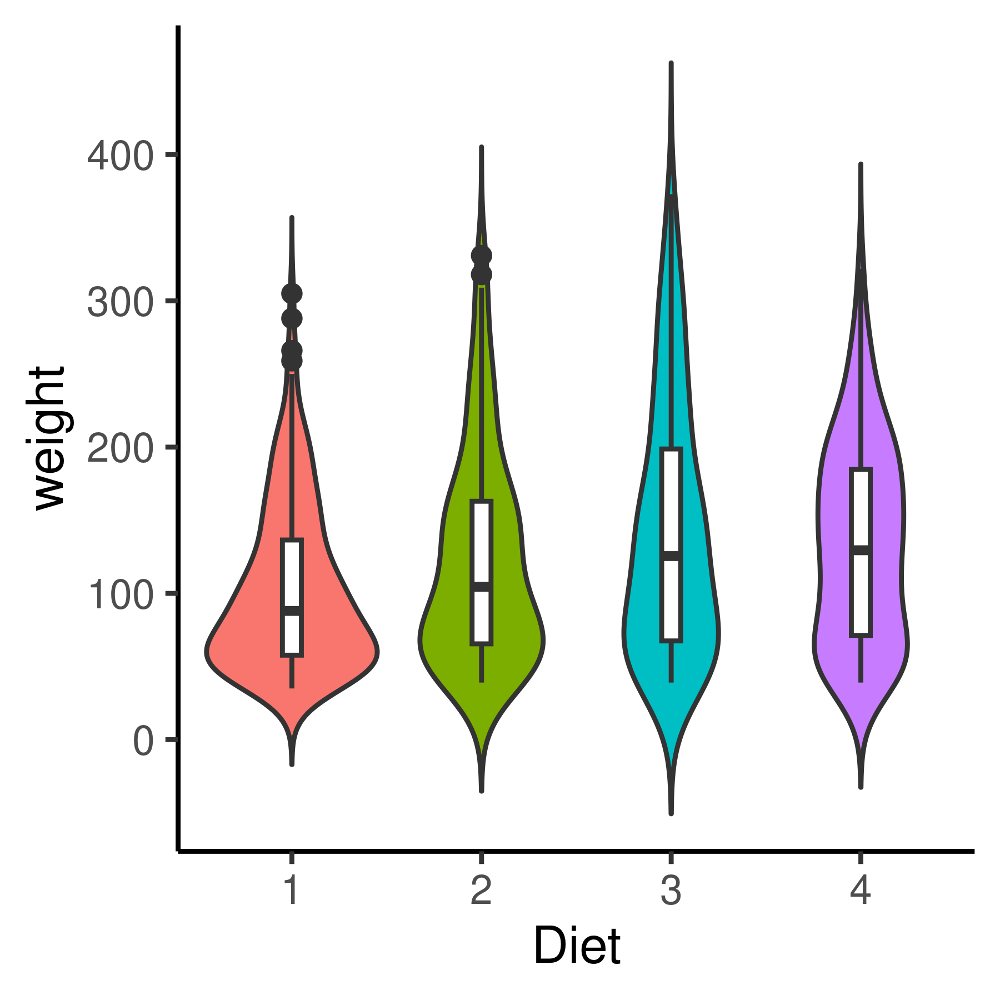

CHAPTER 3 Dashboard Poetry
3.1 Introduction
With the exponential growth of data in various domains, there is an increasing necessity to comprehend and present this data in a manner that is both comprehensible and easily accessible. Consequently, numerous firms and organizations employ interactive dashboards as a means to convey this data in a manner that is both more practical and aesthetically pleasing (Sarikaya et al., 2019).
Dashboards often play a crucial role in facilitating viewers’ cognitive processes by aiding in the comprehension of intricate data, facilitating navigation within a dataset, and enabling data-driven decision-making.
Interactive data dashboards are frequently employed to present many pertinent qualities and performance measures that carry significance for stakeholders.
Each chart on the dashboard contributes to the overall comprehension of the situation, similar to how each sentence in a paragraph contributes to the larger concept.
A dashboard may combine multiple graphs, tables, and metrics to provide an all-encompassing view of a company’s performance, a project’s development, or market trends.
John Tukey was the first to organize the collection and methods associated with philosophy into Exploratory Data Analysis (EDA). Previous research by Tukey focused on graphics as a tool for exploratory analysis. In “Exploratory Data Analysis,” Tukey wrote that graphics and charts often display data with more enhanced understanding than a table, (Tukey & Wilk, 1966). Tukey outlines detailed the types of different graphics and in which situations to utilize these graphics. He was a strong advocate for the importance of EDA as a crucial first step in the data analysis process and emphasized the need for visualization and interactive techniques to understand patterns and relationships in data.
Tukey’s Principles of EDA have become a cornerstone in the field of statistics and have been adopted by data professionals in various industries. Tukey’s principles have enabled data professionals to understand complex data sets better and make more informed decisions by emphasizing the importance of visual exploration, data characterization, and model critique. In this way, Tukey’s Principles have revolutionized our data analysis approach and become the foundational framework for EDA.
Tukey’s Principles in EDA:
Graphical exploration, looking for patterns or displaying fit, the method demonstrates things about data that a single numeric metric does not understand. This has been useful in graphing the data before you develop summary statistics.
Describing the general patterns of the data. This step should be insensitive to outliers. In general, think about the types of resistant measures (i.e., median or mean). This step is making sure to determine data patterns.
The natural scale/state that the data are at their best. This will be the step at which the scale of data can be helpful for analysis. The reexpressing data to a new scale by taking the square root or logarithmic scale.
The mostly known parts of EDA but is done in the way of accessing fit of the data. This is taught in every statistics 101 class. The growth of machine learning and prediction methods have now used residuals more in the toolbox to assessing the best prediction models.

Data visualizations are an integral part of the EDA process, enabling analysts to discern patterns and relationships in the data that would otherwise be difficult to discern from tabular data alone. Through data visualization, analysts can quickly identify trends, outliers, and other patterns that may be missed through numerical analysis alone. Moreover, visualizations facilitate the communication of findings to non-technical stakeholders, allowing them to comprehend complex data sets more efficiently. Through visualizations, analysts can also identify potential issues or biases in the data, resulting in better decisions and models. Thus, visualizations play a crucial role in the EDA process by enabling analysts to more effectively explore, comprehend, and communicate data-derived insights. During the initial EDA stage, an analyst may find that a variable or a covariate is directly related to the dependent variable when looking at a correlation heatmap or a scatterplot.
Using color to represent data on maps is an example of successful graphical communication utilizing semiology. By using different colors to represent different data points, viewers can comprehend patterns and relationships in the data quickly and easily. Jacques Bertin writes in “Semiology of Graphics” that color can be used to “emphasize a point, distinguish one category from another, or establish a relationship between two points”, (Monmonier, 1985). In addition, Bertin explains that the use of color can help overcome language barriers, making it easier for the audience to comprehend the presented information.
By utilizing visual elements such as bars and lines to represent data, graphs can make complex information more understandable to viewers. For instance, a line graph can be used to illustrate the change in the value of a stock over time, making it easier for investors to identify trends and patterns. Leland Wilkinson writes in his book “The Grammar of Graphics” that “graphical methods are not only superior to other forms of communication, but also superior to numerical or verbal methods for certain types of data and reasoning,” (Wilkinson, 2012).
It proposes that any statistical graphic can be broken down into a set of essential components, or “grammar,” that can be combined in different ways to create a wide range of visualizations, following a layered approach to describe and construct visualizations or graphics in a structured manner.
The components of the grammar of graphics include:
Data: The raw data being visualized represents a set of observations or values.
Aesthetic Mappings: The mapping of data variables to visual properties such as position, color, shape, and size.
Scales: The mapping of data values to visual values, such as mapping a numerical value to a bar height.
Geometries: The basic shapes representing the data, such as points, lines, bars, and histograms.
Facets: The plot division into multiple subplots, each representing a different subset of the data.
For example, a bar chart can be created by mapping a categorical variable to the x-axis, mapping a numerical variable to bar heights, and using rectangular bars as the geometry. Moreover, mapping two numerical variables can create a scatter plot to the x and y positions and use points as the geometry. Finally, the “Grammar of Graphics” provides a systematic way of thinking about visualizations, making it easier to choose the appropriate visual representation for a given dataset.

Figure 3.1: Grammar of Graphics Diagram of Wickham and Wilkinson’s work

Figure 3.2: Grammar of Graphics Diagram of Wickham and Wilkinson’s work
The visualization becomes more impactful and memorable by guiding the viewer’s attention towards the key insights. Overall, a well-designed visualization that balances information density and cognitive load can significantly enhance the understanding and communication of complex data.
Steven Few found that the widespread use of dashboards is attributable to their capacity to present key performance indicators and relevant metrics in a visually appealing and easily digestible format, (Few, 2006a). Moreover, technological advancements and the development of user-friendly dashboard platforms have facilitated the creation and effective utilization of dashboards by individuals from diverse fields. Dashboards have revolutionized data analysis and presentation, allowing users to gain valuable insights and make data-driven decisions more effectively. Most dashboard are primarily assembled from one dataset around one primary chart, with some additional text elements and tables of information. Most of these charts are created in a silo with different goals in mind, requiring us to join each element to ensure these are carefully join elements to ensure that these differences are requested while collating relevant information at the user experience.
3.2 Dashbaord Construction
Given that the intended audience has limitations, there are design constraints around the data, and the ability of the audience to successfully use the graphical displays of the data, what can we take from this body of research that applies to more complicated sets of graphics? How do we maintain user attention, desire to explore, and accurately communicate the data through the medium of an interactive data dashboard? Solutions to these questions can start with a dashboard.
A dashboard is a visual display of the essential information needed to achieve one or more objectives, consolidated and arranged on a single screen so the data can be monitored at a glance (Few, 2006a). Dashboards have particular characteristics:
Achieve specific objectives
Fits on a single computer screen
Information can be displayed in multiple mediums (web browser or mobile device)
Can be used to monitor information at a high level
Dashboards can present various statistical data, such as financial performance, website traffic, or customer engagement metrics. They allow users to quickly and easily understand complex data sets using visual elements such as charts, graphs, and tables to display the information. Additionally, statistics can be used to analyze data presented on a dashboard, providing insights into trends and patterns that can inform decision-making.
While a dashboard can be handy, it may be worth describing that a poorly designed dashboard will not be used. A dashboard should be concise, clear, and intuitive when displaying components in combination with a customized list of requirements of users.
Much of the work done within statistical research and dashboard design involves collaboration with other researchers and users. While this may be the best for the growth of the discipline, one will find that working with collaborators with non-STEM backgrounds. Dashboards can help understand and support many data types in essential business objectives. There are many different ways to label and utilize dashboards in different kinds.
Dashboards are cognitive tools that should be used to improve understanding of data, which should help people visually find relationships, trends, patterns, and outliers. Most importantly, dashboards should leverage people’s visual cognitive capabilities.
These principles are based on cognitive psychology and understanding how the human brain processes visual information. By applying these principles to dashboard design, designers can create visual arrangements that make it easier for viewers to understand the relationships between data elements. For example, proximity can be used to group related elements together, while symmetry can be used to create balance and harmony in the overall layout of the dashboard. At its most basic, the entire form is perceived (or emerges to our visual pathways) as opposed to its component parts.
Cowan suggested that the average person can only hold two to six pieces of information in their attention, (Cowan, 2001). People can develop detailed understandings of reality, which is infinitely complex.
Combining two compelling graphics does not necessarily result in a successful visualization. In certain instances, suboptimal combinations can result in confusion, misinterpretation, and the failure to convey the intended message. Combining two charts with distinct scales or units is an example of suboptimal graphic design, which can result in misinterpretation and flawed comparisons. For example, if a bar chart displaying the number of sales is combined with a line chart showing revenue, meaningful comparisons between the two metrics can be challenging. According to a study conducted by Cleveland and McGill, people frequently make inaccurate judgments when comparing graphs with different scales, (Cleveland & McGill, 1984).
In addition, combining two difficult-to-compare graphics with redundant visual cues or unnecessary embellishments such as colors, 3D effects, or patterns can increase cognitive load and reduce the dashboard’s effectiveness. Although adding extra elements to a chart or graph may be tempting, doing so can detract from the primary message and make it more difficult for the audience to focus on the essential information. Tufte discovered that adding unnecessary visual cues to a graph decreases its effectiveness because viewers are more likely to focus on the embellishments rather than the data, (Edward R. Tufte, 1985).
For instance, if a scatter plot and a bar chart are combined, the resulting visualization may be difficult to interpret due to the two graphics types’ incompatibility. This issue was highlighted by Hullman et al., who discovered that viewers had difficulty interpreting a visualization that incorporated a scatter plot and a line chart, (Hullman et al., 2011).
3.3 Cognitive Principles
Perception can be understood at the biology level through sensory systems and their corresponding neural mechanisms. The retina is a multi-layered sensory tissue that lines the back of the eye and acts at the interface of input light and visual perception. The retina is the primary function that captures the photons and convert those photons into electrical impulses that travel along the optic nerve to the brain where they turned into images. The transduction of sensory stimuli into neural signals is a crucial aspect of perception. Each sensory modality, including sight, hearing, and touch, has specialized receptors that convert physical stimuli into electrical signals that the brain can interpret. For example, in vision, light enters the eye. It activates photoreceptor cells in the retina, initiating a cascade of neural signals transmitted to the brain’s visual cortex via the optical nerve, ?? (Hubel & Wiesel, 2004).

Figure 3.3: An example of how the retina signals the visual cortex
Human perception is an essential component of data visualization that can significantly enhance both the content and quantity of displayed information, (Ware, 2012). Perception refers to the organization, interpretation, and conscious experience of sensory data. Perception is also defined as “the process of recognizing (being aware of), organizing (gathering and storing), and interpreting (binding to knowledge) sensory information,” (Ward et al., 2010). Ward et al. explain the notion of perception as the following, “The brain makes assumptions about the world to overcome the inherent ambiguity in all sensory data, and in response to the task at hand.”
The principles of eye-tracking involve the investigation of eye movements and fixations during visual perception. Eye-tracking technology permits researchers to monitor and record where individuals look and how their gaze traverses a visual scene. This data can be utilized to analyze patterns of attention, gaze behavior, and the sequence of fixations. The principles of eye-tracking provide valuable information regarding how individuals allocate their attention, which elements attract their gaze, and how they visually explore and process information.
Gestalt principles, on the other hand, examine how humans perceive and organize visual elements into meaningful patterns and wholes.
These principles originated in the field of Gestalt psychology, which emphasized that perception is influenced by the arrangement and grouping of its constituent parts. The Gestalt principles of proximity, similarity, closure, and continuity describe how our brains organize visual stimuli to form coherent and meaningful perceptions.
Perceptual grouping is a fundamental process in visual perception that involves organizing individual graphical elements into coherent perceptual units based on their inherent properties and spatial relationships. It helps us make sense of the complex visual world by grouping elements that belong to the same object or structure and separating elements that belong to different entities. Gestalt psychologists have extensively studied the concept of perceptual grouping, proposing principles such as proximity, similarity, closure, and continuity as grouping’s underlying mechanisms. These principles govern our perception of objects, edges, contours, and patterns, enabling us to perceive organized and meaningful visual information (Wertheimer, 1938), (Wagemans et al., 2012) and (Palmer, 2002).
According to (Goldstein & Cacciamani, 2021), preattentive processing automatically extracts and analyzes basic features such as color, shape, orientation, and motion. These features are processed in parallel across the visual field, allowing for the rapid detection and identification of salient environmental stimuli. Preattentive processing occurs effortlessly and outside conscious awareness, laying the foundation for subsequent attentional selection and more elaborate perceptual processing.
The theories of Goldstein emphasize the significance of preattentive processes in various perceptual domains. For instance, he discusses the preattentive analysis of visual features such as color and orientation, which contribute to the visual perception of objects, scenes, and graphic patterns. In the auditory domain, preattentive processes automatically extract basic acoustic features like pitch and loudness. This makes it easier to find the source of sounds and tell them apart.
By examining preattentive processing, Goldstein’s theories provide a framework for comprehending the initial stages of sensory processing and the automatic extraction of fundamental perceptual features. These theories have significant implications for understanding how automatic and controlled processes shape perception.
Perception and attention are crucial cognitive processes that allow users to interpret and make sense of data visualizations. Perception refers to the manner in which we interpret and organize sensory information from our environment, whereas attention refers to the capacity to selectively focus on particular aspects of this information (McCallum, n.d.). Expectations of perception and attention are important in data visualization interactions, however expertise is the in-depth knowledge and skills that come from having a lot of experience and learning over a long period of time.
In addition to perception and focus, domain-specific knowledge is essential for understanding and interacting with data visualizations. Expertise in a particular field can enable individuals to better interpret and comprehend the significance of the presented data, as well as identify potential biases or errors in the visualization. Thus, the ability to perceive and interact with data visualizations requires a combination of perceptual and attentional processes, as well as domain-specific knowledge, to interpret and comprehend the presented information. This suggests that data visualization involves the misuse of human visual perception in the visual presentation of data. Assigning meaning to visualization is not a statistical or computational step but a cognitive one. Each step in the data analysis process is part of a more extensive mental process of constructing meaning with important cognitive-based concepts.
Short-term memory (STM), also known as working memory, is the stage of temporary storage and processing where most memory retention effort is expended. According to Alan Baddeley’s Working memory: Theories, models, and controversies, STM is a limited-capacity system prone to interference and decay, (A. Baddeley, 2012). Selective attention is essential for the maintenance of STM because it allows us to filter out irrelevant information and concentrate on what is essential, (Cowan, 2001).
Visual aids such as charts and diagrams can improve short-term memory by allowing us to encode and retain information more effectively, (Alvarez & Cavanagh, 2004). Utilizing visual aids such as charts can enhance our short-term memory by . Furthermore, annotations can also help aid short-term memory. By adding annotations, such as notes or highlights, to information we are trying to remember, we can improve our recall of the information later on, (Alvarez & Cavanagh, 2004).
According to the Feature Integration Theory (FIT), STM is composed of two stages: pre-attentive processing and focused attention (A. Treisman, 1998). Parallel and independently, the brain processes the physical characteristics of an object, such as its color, shape, and orientation, during pre-attentive processing. However, focused attention is required to bind these features into a coherent object representation in STM. STM can be improved through various strategies, such as rehearsal, chunking, and elaboration (Oberauer, 2009). For example, by repeating a phone number several times or breaking it down into chunks of two or three digits, we can increase the likelihood of it being stored in STM. Similarly, by elaborating on the information we want to remember, such as creating mental associations or visual images, we can enhance its retention in STM (Bui & Myerson, 2014).
STM is a dynamic and malleable cognitive system that is crucial to our daily lives. Understanding the mechanisms underlying STM and how to improve it can have significant implications for learning, memory, and the treatment of memory disorders. By analyzing the relationship between attention and working memory, we can gain insight into how we construct meaning from the information in our environment.
Gestalt psychology indicates that humans actively construct meaning by organizing information into patterns and wholes (Wertheimer, 1938). Both top-down and bottom-up processing are involved in the process of meaning construction. Bottom-up processing entails analyzing sensory data from the environment and constructing perceptions based on this data. Top-down processing reflects the influence of prior knowledge, expectations, and context on the perception and interpretation of incoming sensory data.
Together, top-down and bottom-up processing facilitate the encoding and retrieval of information from STM.
Selective attention, which is the ability to focus on relevant information while ignoring irrelevant information, is an example of top-down processing that aids in the encoding and retrieval of information in STM (Cowan, 2010).
According to FIT, perceiving objects involves both the bottom-up analysis of individual features and the top-down processing of higher-level features in order to form a complete perception (A. M. Treisman & Gelade, 1980).
The Gestalt principles of perception address how humans construct meaning from sensory data through both bottom-up and top-down processing. Both types of processing are involved in encoding and retrieving information, which has significant implications for understanding the mechanisms of STM.
Baddeley expanded our understanding of working memory by emphasizing its active processing nature, expanding upon the model of Atkinson and Shiffrin’s Information Model developed in the 1968, which emphasizes the process of encoding, storage, and retrieval. Unless actively practiced, short-term memory has a limited capacity and a short duration of retention. If information is deemed significant or sufficiently rehearsed, it can be encoded and transferred to long-term memory, which has an almost unlimited capacity and long-term storage. The influential model developed by Baddeley, known as the working memory model, proposed a more complex structure with multiple components, (Baddeley Alan D., 1976).
The Baddeley Memory Model is an updated and influential model of working memory. It includes the phonological loop (maintenance of verbal information), the visuospatial sketchpad (maintenance of visual and spatial information), the central executive (attentional control), and the episodic buffer (integrated storage). Together, these components facilitate the active processing and temporary storage of data in working memory.

Figure 3.4: Working Memory Model created by Baddeley (left) and Information Processing Model created by Atkinson and Shiffrin (right)
Figure 3.5: Working Memory Model created by Baddeley (left) and Information Processing Model created by Atkinson and Shiffrin (right)
Visual and spatial information is processed and temporarily stored in the visuospatial sketchpad when individuals view statistical graphics. The central executive component facilitates the interpretation and analysis of the presented data by directing attention to pertinent aspects of the graphic. Utilizing working memory resources effectively can aid in comprehending and remembering the statistical information conveyed by the graphics.
Together, Baddeley’s model of working memory provided a comprehensive framework for studying memory and cognition. They contributed to the understanding of how information is processed, encoded, stored, and retrieved in human memory systems, laying the groundwork for subsequent research and theories in cognitive psychology.
3.4 Ensemble Perception
Ensemble perception is the cognitive ability to quickly derive summary statistics from sets of similar items (Chong & Treisman, 2003). This component of visual cognition enables the visual system to summarize and describe collections of comparable objects or features effectively. This capability is often activated at a glance and is crucial for making sense of complex visual scenes.
David Whitney’s fundamental review outlines the core principles of ensemble perception, emphasizing the extraction of summary statistical information from groups of similar objects (Whitney, Haberman, & Sweeny, 2014) and (Dakin & Watt, 1997).
(J. Haberman, Brady, & Alvarez, 2015) further discussed that individual differences exist in ensemble perception capabilities, indicating the presence of multiple, independent levels of ensemble representation.
Recent studies have expanded on these principles.
Khayat et al.’s work explores how ensemble perception can create a unified perception from groups of similar objects and also delves into the implicit perception and memory of set statistics (Khayat, Ahissar, & Hochstein, 2023) and (Khayat, Fusi, & Hochstein, 2021).
The study “Perceptual History Biases in Serial Ensemble Representation” by Khayat et al. focuses on ensemble perception, explicitly examining how past visual experiences influence the perception of current visual ensembles.
The study investigates the serial dependence of ensemble perception when each ensemble set is presented simultaneously but spatially distributed over the screen.
This suggests that the objects and our prior experiences with similar ensembles impact how we perceive groups of similar objects (Khayat et al., 2023).
This adds a layer of complexity to the understanding of ensemble perception, which is generally considered the visual system’s ability to summarize groups of similar objects into a unified perception efficiently.
The study “Perceiving ensemble statistics of novel image sets” by Khayat et al. focuses on how the human visual system perceives summary statistics of sets of stimulus elements.
The study is particularly interested in how we perceive novel image sets and hypothesizes that our capacity to summarize statistical data from these sets affects how well we can comprehend and interpret new visual information (Khayat et al., 2021).
This research contributes to the broader field of ensemble perception, which explores how the visual system can efficiently represent groups of similar objects as a unified perception.
The study implies that not only can the visual system quickly grasp the “gist” or essence of familiar visual ensembles, but it can also do so for novel sets of images.
This ability to quickly summarize statistical information from new visual stimuli could be a fundamental feature of human perception (Khayat & Hochstein, 2018).
Other research has investigated the role of ensemble perception in both high- and low-level visual information, such as emotion and brightness, and how it can even operate when scene information is incomplete (Chakrabarty & Wada, 2020) and (J. M. Haberman & Ulrich, 2019).
Furthermore, ensemble perception is not just a specialized function but a pervasive aspect of visual perception.
It has been discussed holistically to engage a general audience and has been shown to condense redundant information into summary statistical representations (Corbett, Utochkin, & Hochstein, 2023) and (Whitney & Manassi, 2022).
Lastly, stable ensemble representations have been found to facilitate visual search, even when they are not predictive of a target location (Utochkin, Choi, & Chong, 2023).
The study focuses on a coding model that emphasizes the crucial role of the “pooling layer” in ensemble perception.
Ensemble perception refers to the ability of the visual system to summarize information from a group of similar objects.
The “pooling layer” in the model likely serves as a computational mechanism for aggregating or summarizing this information, potentially providing insights into how the brain processes complex visual scenes.
The study aims to provide a more structured understanding of ensemble perception by introducing a model highlighting the importance of a specific computational layer, known as the “pooling layer,” in summarizing visual information.
3.4.1 Multidimensional Ensembles
Initial research on ensemble perception primarily focused on one-dimensional ensembles, where summary statistics are extracted from a single feature or dimension (J. Haberman et al., 2015). For example, in a study on facial expression perception, participants were presented with an ensemble of faces displaying different emotions. In this case, the pooling layer would analyze the overall emotional expression of the ensemble, summarizing the various individual facial expressions into one general emotion perception. This model allows researchers to understand how humans perceive and interpret complex emotional expressions more systematically. However, as (Maule & Franklin, 2015) notes, real-world scenes often consist of complex, multidimensional attributes, and research has gradually shifted towards understanding how the human visual system processes these more intricate ensembles. Research on multidimensional ensembles has explored how people simultaneously perceive summary statistics across multiple attributes, such as size and color.
(Dakin & Watt, 1997) were among the first to explore how orientation statistics are computed from visual textures, extending the concept of ensemble perception into a multidimensional setting.
(J. Haberman et al., 2015) expanded this research by showing that individual differences exist in ensemble perception capabilities, suggesting multiple, independent levels of ensemble representation exist.
The existing literature on multidimensional ensembles in visual information covers various topics, from neuroscience to data visualization.
For instance, studies have explored the role of neuronal ensembles in controlling visually guided behavior and their influence on visual working memory (Carrillo-Reid, Han, Yang, Akrouh, & Yuste, 2019).
Research has also delved into the use of aggregated plots for multidimensional visual analysis, although these don’t explicitly mention ensembles (Fofonov & Linsen, 2018).
Fast ensemble representations have been investigated to understand high-level perceptual impressions based on visual information (Leib, Kosovicheva, & Whitney, 2016).
Additionally, the aesthetic complexity of visual information has been quantified using information theory, offering a potential framework for ensemble-based representations (Karjus, Solà, Ohm, Ahnert, & Schich, 2023). But a detailed example of why you shouldn’t use aggregated plots for multidimensional visual analysis is when the individual data points in the ensemble show significant differences. Data aggregation may obscure important patterns in such scenarios and lead to misleading interpretations. Further, ensembles may fail to capture the fine-grained details and nuances present in the individual plots, compromising the overall accuracy and precision of the analysis. The long-term stability of neuronal ensembles in the visual cortex has been studied, shedding light on their potential role in visual perception (Pérez-Ortega, Alejandre-Garcı́a, & Yuste, 2021). Ensemble visualization techniques, particularly in computer simulations, have also been reviewed (Afzal et al., 2019). Lastly, the structure of neural networks has been shown to affect working memory, which could have implications for visual ensembles (Leavitt, Pieper, Sachs, & Martinez-Trujillo, 2017).
3.4.2 Ensemble Visualization
Ensemble visualization refers to the graphical representation of ensemble data, which typically consists of multiple related datasets.
It aims to provide a comprehensive view that allows for rapidly extracting visual statistics and insights about distributed information.
The goal is to provide a comprehensive view that allows for rapidly extracting visual statistics and insights about distributed information.
Ensemble visualization is an emerging field that focuses on the graphical representation of ensemble data.
By providing a comprehensive view and allowing for the rapid extraction of visual statistics and insights, ensemble visualization techniques can aid in identifying areas of interest and facilitate data interpretation.
Ensemble visualization techniques can vary, including Ensemble Surface Slicing (ESS) to visualize regions of similarity and difference among surfaces and statistical visualization techniques to identify areas of interest quickly (Alabi et al., 2012) and (Potter et al., 2009).
Ensemble visualization is an emerging field focusing on the graphical representation of ensemble data, which typically consists of multiple related datasets.
The aim is to provide a comprehensive view that allows for the rapid extraction of visual statistics and insights about distributed information.
By combining various statistical visualization techniques, (Potter et al., 2009) presents the Ensemble-Vis framework in his paper as a way for scientists to identify areas of interest quickly.
The paper’s thorough methodology, which combines various statistical visualization techniques to build a more helpful ensemble visualization framework, makes it noteworthy.
This framework has been referenced by many other studies, leading to the development of new visualization methods.
This paper by LM Padilla investigates how ensemble displays, which plot multiple data points on the same Cartesian coordinate plane, affect the viewer’s understanding and interpretation of the data. The paper contributes to the theory by examining the cognitive aspects of ensemble visualization. By exploring the effects of ensemble and summary displays on data interpretation, Padilla’s research adds valuable insights to the field (Padilla, Ruginski, & Creem-Regehr, 2017). However, a counterexample to the effectiveness of ensemble displays can be observed when the data points are highly overlapping and densely packed, leading to visual clutter and difficulty distinguishing individual data points. In such cases, ensemble displays may hinder the viewer’s understanding and interpretation of the data rather than enhance it. This highlights the importance of considering the specific characteristics of the presented data when deciding whether to use ensemble displays. Additionally, summary displays, which provide an overview of the data, can be a helpful alternative in situations where ensemble displays may be less effective. Summary displays condense the data into crucial statistics or visual representations, allowing for more straightforward interpretation and analysis, especially when dealing with complex or dense datasets. Further research is needed to explore the optimal conditions for ensemble and summary displays to maximize their effectiveness in data interpretation.